废土飞行员
AIGC · 游戏影像
作品简介
用飞行员的第一人称视角穿过废弃街区。老旧仪表和座舱框体留在画面前景，外部空间从倾斜的高楼夹道变成断楼屋顶和低矮通廊。镜头靠空间宽窄和视野开合表现驾驶中的速度与压迫感。
制作资产
点击图片放大查看
人物与角色

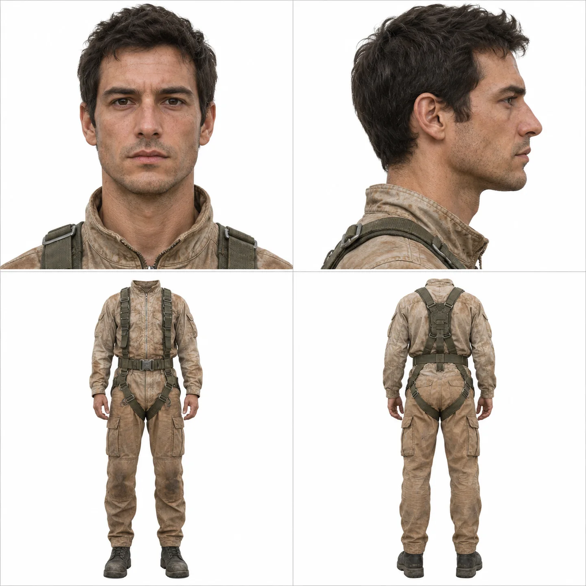
原片为第一人称，人物只见膝部和裤装。脸部、上衣和背面为按棕沙色飞行工装补设。表演重心是快速转向时的轻微动作。
场景与布景

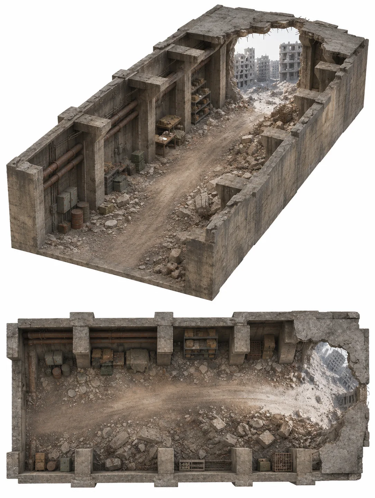
场景设定用于「进暗通廊，重新冲入日光」段落。通过阴暗楼板后画面变亮，最终停在下一段街区的方向。

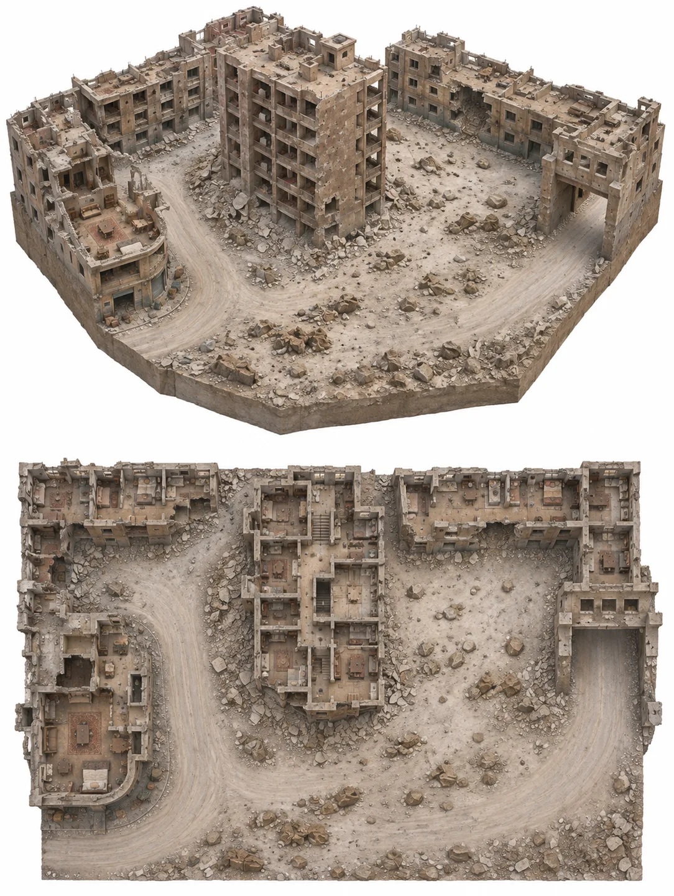
场景设定用于「降低到街区尺度飞行」段落。破墙在近处掠过，尘埃由近及远拉出层次。

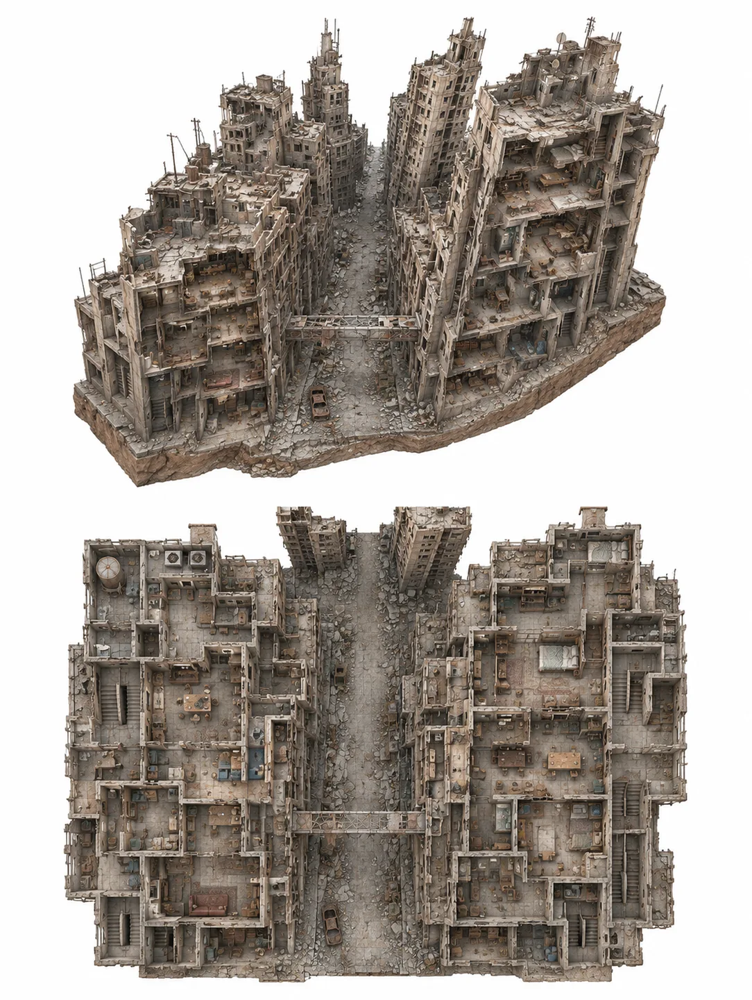
场景设定用于「座舱朝上夹在残楼之间」段落。高楼两侧滚动，随座舱倾斜加速。

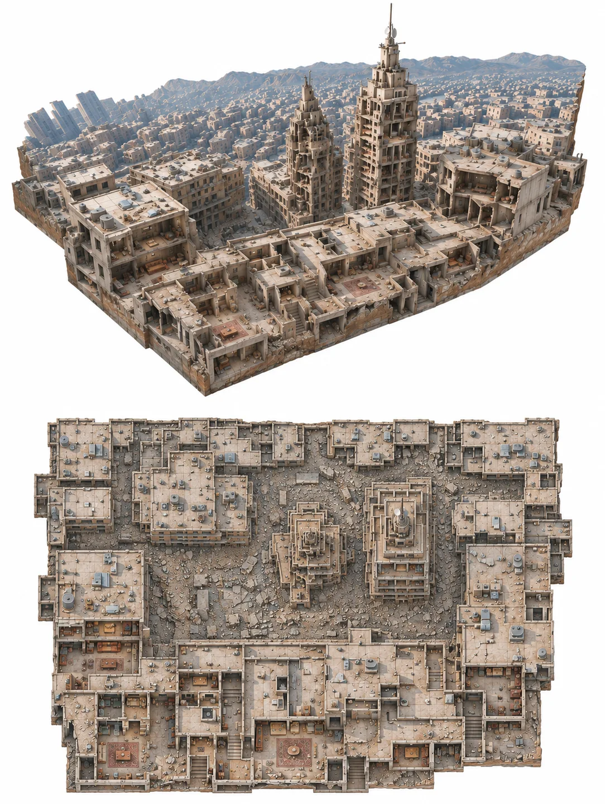
错落的断楼与裸露楼板为低空掠过屋顶的镜头提供前后层次。

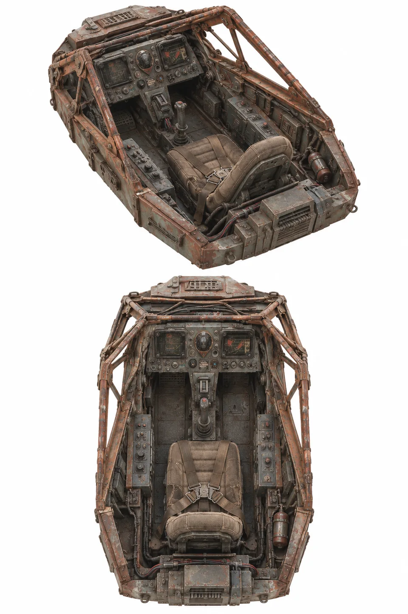
场景设定用于「座舱朝上夹在残楼之间」段落。高楼两侧滚动，随座舱倾斜加速。
道具与产品

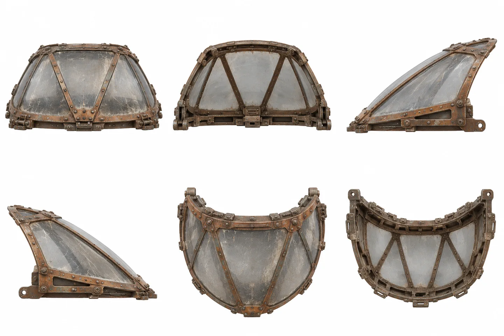
舱罩是全片视角边框，棕色骨架和模糊玻璃材质贯穿低空飞行。

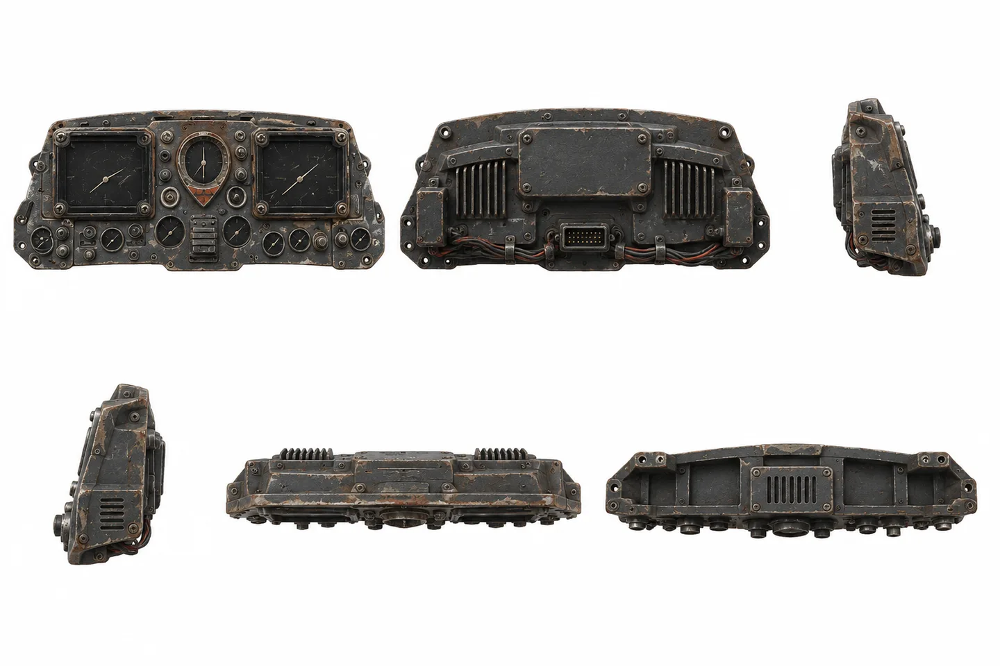
模拟飞行器台面，圆形仪表只保留机械质感，表盘不印数字。

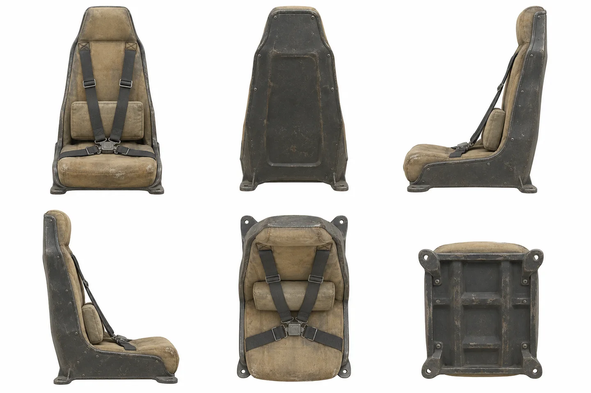
从第一人称膝部和空间推断的窄型座位，用于补足座舱平面结构。

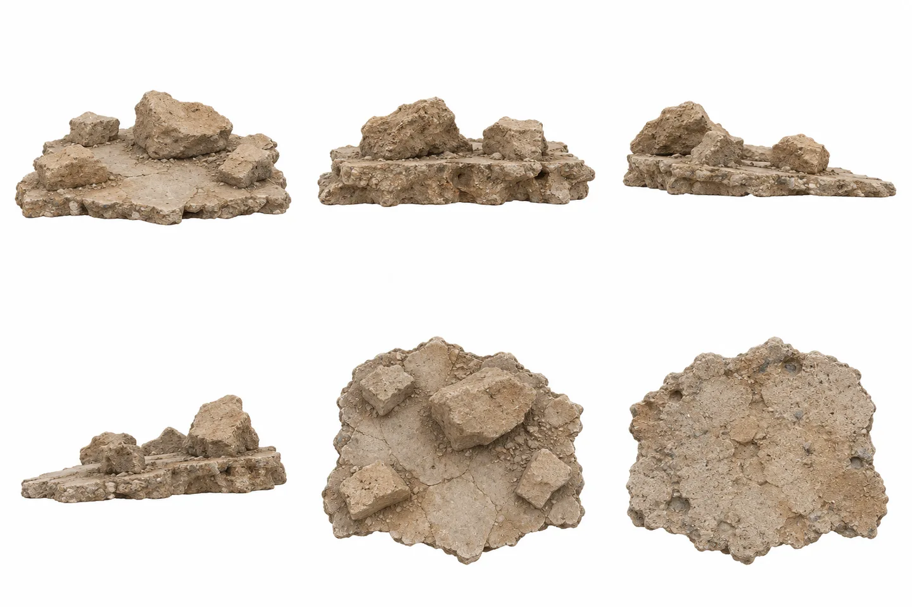
破碎混凝土板和灰尘石块，布置在街区路缘、屋顶和通廊角落。

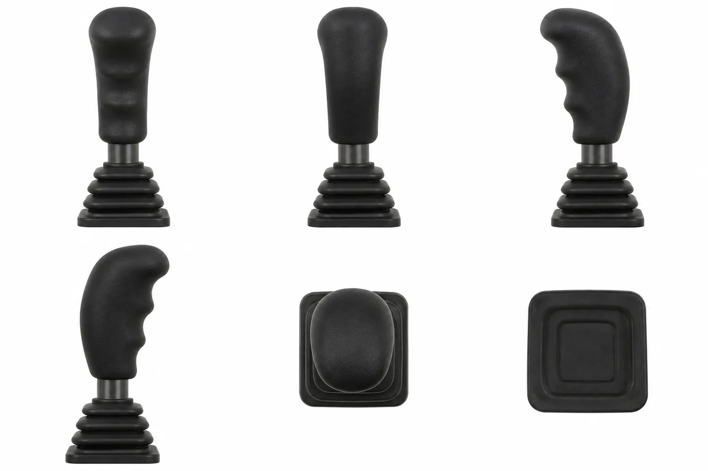
在座舱台下方用作操作动作提示，只提供外观。